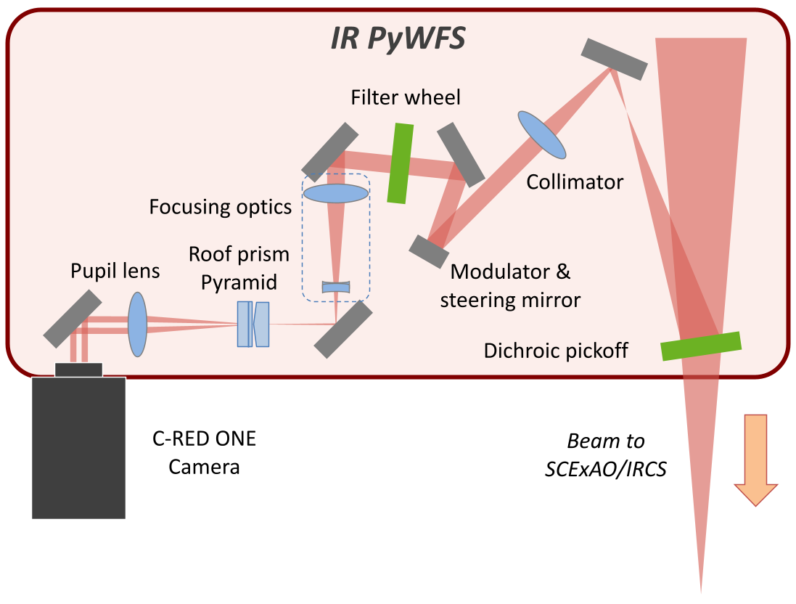

Near-IR Wavefront Sensor - Technical Description
Position inside AO188
| |
Position of the optics and the C-RED ONE in AO188.
In Phase I of the deployment of the NIR WFS, the optics fit inside AO188, while the C-RED ONE camera is
mounted on
the
side of the instrument. This was due to a lack of space inside AO188. The camera has to be removable, since
a
collision
is possible with SCExAO’s own C-RED ONE camera used for the FPDI mode. Therefore, in phase I, it will not be
possible to
have both cameras at the same time. Figure 5 presents the current suggested position for the optics and the
camera.
The dichroic beamsplitter sending some light to the NIR PyWFS is designed to be compatible with science
observation
with IRCS, especially K-band spectroscopy. Finally, it will not impact other observing modes with IRCS,
SCExAO or IRD.
|
Optical path
The NIR WFS is designed to have two modes:
- Pyramid Wavefront Sensing (PyWFS) mode
- Focal Plane WFS mode (FPWFS)
Pyramid Wavefront Sensing (PyWFS) mode
|  |
A pair of roof prisms splits the beam in 4. This
concept was validated with the visible PyWFS of SCExAO.
|
Focal Plane WFS mode (FPWFS)
| |
A Focal Plane WFS mode (FPWFS), where the light is focused on the detector instead of looking at the
pupil image. This mode can just be used to look at the image quality (in open-loop), calibrate the
radius
of the
modulation
applied for the PyWFS mode, or use it as an actual wavefront sensor commanding the ALPAO DM by
defocusing slightly
the
image. It can be used as the truth wavefront sensor for the LGS mode. In Phase II, this mode could also
serve as the
truth wavefront sensor for the LTAO.
|
NIR WFS dichroic beamsplitter
|
Mounting solution for the NIR WFS dichroic beamsplitter at the output of AO188 (top, the optics mount on
the
right shows the stored position). The flip mount can be removed and put back repeatedly thanks to two
pins (bottom).
The dichroic beamsplitter for the NIR WFS is placed at the output of AO188, inside a flip mount attached
upside-down. It is placed at a shallow angle of 9 degree to send the light to the NIR WFS. The
flip mount allow
to move the beamsplitter out of the way without colliding with the IRD injection, but the flip mount can
also be removed
entirely thanks to the locating pins.
|
Several beamsplitters are available, depending on the instrument and science case. Since the flip mount only
accommodates one optic at a time, a choice has to be made before each observing run on what beamsplitter to use.
Once the Nasmyth Beam Switcher is installed, version 2 of the NIR WFS will move to the LTAO WFS platform, and we
will
have enough space to include a mechanism (wheel or linear actuator) to switch between the different options.

We currently offer 4 beamsplitters, which spectra in reflectance shown above :
- A dichroic BS for IRCS, sending 100% of y, J and H band to the NIR WFS, 100 % of K-band to IRCS.
- A first dichroic BS for SCExAO, sending 50% of y, J and H-band to the NIR WFS, 50 % to SCExAO, in addition to
100%
of
visible light (600-900 nm) and K-band.
- A second dichroic BS for SCExAO with the same characteristics as the first one, but sending 10% of y, J and
H-band
to
the NIR WFS, 90% to SCExAO (for brighter targets).
- A third dichroic BS for SCExAO, sending 100% of y and J band to the NIR WFS, 100% of the visible and H and
K-band to
SCExAO.
Note that SCExAO dichroics could be used for IRCS, and vice-versa.
Core optics
|
The core optics were designed to fit in the small space available inside AO188. Two platforms installed
on 1.5”
columns reduce the beam height from 250 mm to 106 mm
|
The narrow platform contains:
- A first 2-inch fold mirror.
- A 150 mm collimation lens. The lens is on a motorized translation stage to change the focus.
- A ½-inch modulation mirror where the pupil is reimaged. The modulation mirror is on a motorized tip/tilt mount,
to
use
off-axis stars as guide stars.
- A second 1-inch fold mirror. The large platform contains the rest of the optics.
The large platform contains the rest of the optics :
- A filter wheel that can reduce the bandwidth of the WFS. It contains 3 band filters (y, K or H-band), 2
dual-band
filters (y+J and J+H) and an open slot.
- A third 1-inch fold mirror.
- A converging+diverging lens combination allows one to focus on the pyramid optics with the right F/ratio while
keeping a
compact configuration. The diverging lens is on a motorized mount to change the distance between the lenses
(therefore
the F/ratio), while the combination is on a motorized translation stage to focus precisely on the tip of the
pyramid
optics.
- A fourth 1-inch fold mirror.
- The dual roof prism pyramid optics splitting the light for the wavefront sensor. The optics are on a motorized
vertical
translation stage, which allows to move it out of the way for a focal plane imaging mode.
- Two lenses on a motorized X/Ystage: one 80 mm lens reimaging the 4 pupils on the detector for the PyWFS mode,
and
one
150 mm lens reimaging the focal plane for the FPWFS mode.
- A fifth 1-inch fold mirror.
Camera
|
C-RED ONE camera mount design for the NIR WFS. The alignment mount between the platform and the camera
is a duplicate of the FPDI mount. Camera Mounting
|
The camera is mounted on a platform hanging on the side of AO188, supported by brackets resting against the side of
the AO188 bench. This was the only possible solution due to the optical path, the lack of space inside
AO188, and the constraint on the shared use of the camera with SCExAO FPDI mode (although this constraint will not
exist once the Nasmyth Beam Switcher is installed).
For alignments, the camera is mounted on a high-load lab jack for vertical alignment, as well as a high-load 2-axis
stage, for horizontal and focus alignment. This is a duplication of the alignment mount of the FPDI, which performs
very well.
Camera Settings
The default window size is 160x160 pixels, although the full frame (320x256 pixels) could be used for the FPWFS mode.
With a
160x160 pixel window, the acquisition runs at a maximum frame rate of 9.8 kHz. We can then use the camera in
correlated
double sampling (CDS) mode or non-destructive read (NDR) mode to get the optimal noise level and speed, between 1
and 4.9
kHz depending on the target brightness. CDS is the default mode, since the camera integrates during a whole cycle
of the modulator. If the modulation is not used, then NDR could be used. The detector gain can also be adjusted
between
1 and 121 (max) for bright targets.
The C-RED ONE camera is used in Correlated Double Sampling (CDS) mode, where the sub-frame is read immediately after
a frame reset, then reset and read again. The result is the difference between the frame before the reset and the
previous one just after the reset. The sub-frame used is 160x160 pixels, with a read time of tread = 102 μs. So if
we program
the CDS mode to run at a frequency FCDS, then the actual integration time tint will be:
tint=1FCDS-tread.
In that case, we do not want the modulator to be synchronized with the CDS reads, otherwise we would lose a fraction
of the rotation during the actual integration time. Therefore, the modulation frequency Fmod is set to
Fmod=1tint=FCDS1-FCDStread.
Integration time, modulator frequency and maximum modulation radius for various loop frequencies
The Table below presents the integration time, modulator frequency and maximum modulation radius for various loop
frequencies.
The maximum frequency for CDS mode and the desired sub-window is 4.9 kHz, at which point the duty cycle drops to
50%. The readout scheme creates a rolling shutter effect linked to the duty cycle that is out of the scope of this
paper,
although we will probably always be at or below 2 kHz, where this effect will not impact us too much.
| Integration time, modulator frequency and maximum modulation radius for various loop
frequencies |
| CDS frequency [Hz] |
500 |
750 |
1000 |
1500 |
2000 |
| Actual integration time [ms] |
1.898 |
1.231 |
0.898 |
0.565 |
0.398 |
| Modulator frequency [Hz] |
526.9 |
812.1 |
1113.6 |
1771.0 |
2512.6 |
| Maximum modulation radius [mas] |
250 |
190 |
145 |
60 |
40 |
{kind=link}
{kind=link}
{kind=link}
{kind=link}
{kind=link}
{kind=link}
{kind=link}